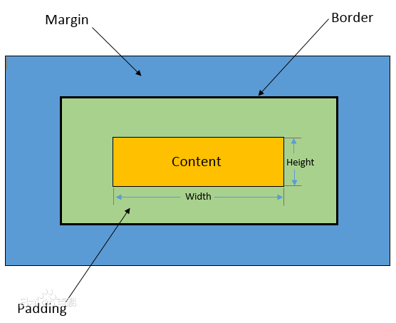

元素的size
元素也有size？元素的size是神马？？？
分享者：lyn
元素的尺寸
说到元素的尺寸就不得不说一下盒子模型，说到盒子模型又不得不画个图。。。
浏览器在解析html元素时，将每个元素当做一个盒子进行渲染，什么样的盒子？

如何通过js获取元素样式的值呢？
原生js中，如果是内联样式，可直接通过element.style获取height、padding和margin等属性值
如果样式通过外联样式设置的宽高，是无法直接通过element.style获取，那该怎么办呢？
如果是外联样式可以通过window.getComputedStyle()获取计算后的样式值
注意:获取单位均为px，即使设置单位为em，也会被转化为px
js虽然有时不能直接获取样式值，但可以直接获取clientHeight,offsetHeight,scrollHeight属性值
clientHeight,offsetHeight,scrollHeight又是啥？
clientTop和clientLeft又是啥？
- clientTop和clientLeft可以获取元素所设置的左边框和上边框的大小。
- 如果各个边框的大小不一样的时候，可以通过计算出right和bottom的值
- 计算clientRight：offsetWidth - clientWidth - clientLeft
- 计算clientBottom：offsetHeight- clientHeight- clientTop
offsetLeft和offsetTop又是啥？
- offsetLeft和offsetTop可以获取当前元素相对于父元素的位置。
- 这两个值会受到父元素padding的影响，padding增加，值相应的增加
- 这两个值会受到父元素border的影响，border增加，值相应的增加
- 这两个值会受到元素自己margin的影响，margin增加，值相应的增加
scrollTop和scrollLeft又是啥？
- scrollTop和scrollLeft可以获取滚动条被隐藏(滚动条上方区域)的区域大小。
- 通过设置这两个值可以对元素内的滚动内容进行定位，展示该区域
- scrollTop指的是元素内滚动内容所在区域滚动条距离父元素顶部的距离
- scrollLeft指的是元素内滚动内容所在区域滚动条距离父元素左边的距离
- crtl+F功能的原理就是根据这两个属性进行实现
jq中获取Height、innerHeight和outerHeight
- 通过height()可获取元素的高度，即盒子模型中height的值
- 通过innerHeight()可获取height + padding*2 的值
- 通过outerHeight()可获取height + padding*2 + border*2 的值
-
如果outerHeight()传参true则会获取height + padding*2 + border*2 + margin*2 的值
-
相应获取宽度属性值可以使用width，innerWidth和outerWidth方法
jq中获取元素偏移
- 通过offset()可获取元素相对于document文档的坐标值
- 通过offset()的top和left两个属性分别获取距离顶部和左边的距离
- 通过position()可获取相对于最近的已定位的包含元素的位置。
- 通过position()的top和left两个属性分别获取距离顶部和左边的距离